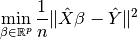
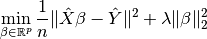
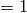
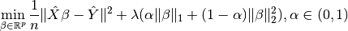
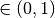
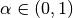

9. Regularization¶
In mathematics, statistics, and computer science, particularly in the fields of machine learning and inverse problems, regularization is a process of introducing additional information in order to solve an ill-posed problem or to prevent overfitting (Wikipedia Regularization).
Due to the sparsity within our data, our training sets will often be ill-posed (singular). Applying regularization to the regression has many advantages, including:
- Converting ill-posed problems to well-posed by adding additional information via the penalty parameter

- Preventing overfitting
- Variable selection and the removal of correlated variables (Glmnet Vignette). The Ridge method shrinks the coefficients of correlated variables while the LASSO method picks one variable and discards the others. The elastic net penalty is a mixture of these two; if variables are correlated in groups then
 tends to select the groups as in or out. If α is close to 1, the elastic net performs much like the LASSO method and removes any degeneracies and wild behavior caused by extreme correlations.
tends to select the groups as in or out. If α is close to 1, the elastic net performs much like the LASSO method and removes any degeneracies and wild behavior caused by extreme correlations.
9.1. Ordinary least squares regression¶

When  (i.e.
(i.e. regParam  ), then there is no penalty.
), then there is no penalty.
LinearRegression(featuresCol="features", labelCol="label", predictionCol="prediction", maxIter=100,
regParam=0.0, elasticNetParam=0.0, tol=1e-6, fitIntercept=True, standardization=True, solver="auto",
weightCol=None, aggregationDepth=2)
9.2. Ridge regression¶

When  (i.e.
(i.e. regParam  ) and
) and  (i.e.
(i.e. elasticNetParam ) , then the penalty is an L2 penalty.
LinearRegression(featuresCol="features", labelCol="label", predictionCol="prediction", maxIter=100,
regParam=0.1, elasticNetParam=0.0, tol=1e-6, fitIntercept=True, standardization=True, solver="auto",
weightCol=None, aggregationDepth=2)
9.3. Least Absolute Shrinkage and Selection Operator (LASSO)¶

When (i.e. regParam ) and  (i.e.
(i.e. elasticNetParam ), then the penalty is an L1 penalty.
LinearRegression(featuresCol="features", labelCol="label", predictionCol="prediction", maxIter=100,
regParam=0.0, elasticNetParam=0.0, tol=1e-6, fitIntercept=True, standardization=True, solver="auto",
weightCol=None, aggregationDepth=2)
9.4. Elastic net¶

When (i.e. regParam ) and elasticNetParam  (i.e. ) , then the penalty is an L1 + L2 penalty.
LinearRegression(featuresCol="features", labelCol="label", predictionCol="prediction", maxIter=100,
regParam=0.0, elasticNetParam=0.0, tol=1e-6, fitIntercept=True, standardization=True, solver="auto",
weightCol=None, aggregationDepth=2)